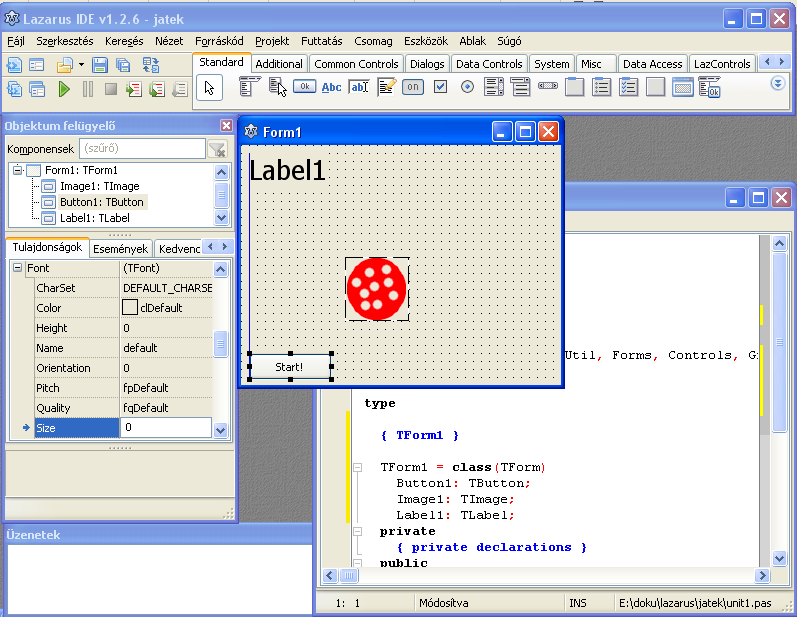

16. fejezet: Egy összetett grafikus alkalmazás
Ebben a fejezetben összeállítunk egy egyszerű játékot, amelyben egy képernyőn feltűnő labdát kell elkapni minél többször. Még mindig az IDE eszközeivel dolgozunk, és nem készítünk saját objektumot.
A projekt alapjai
Hozz létre egy új projektet, és mentsd el egy saját mappába (jatek), jatek néven (mármint az .lpi fájlt, mert a unit1.pas neve marad).
A labdát tetszőleges rajzolóprogrammal elkészítheted, a kép mérete legyen 64x64 pixeles. Mentsd el labda.png néven (és png formátumban!) a jatek mappába.
Helyezz el a formon egy TImage típusú objektumot (az Additional fülön találod az eszköztáron), ez lesz az Image1. Keresd meg a Picture tulajdonságát, és ott töltsd be a képet. Az Image1.Height és Width tulajdonságot állítsd 64-re.
Mivel a kép mindig téglalap alakú tartomány, a formon a labda körül látszik a téglalap alakú háttér. Az átlátszóság kezelésére az egyszerűbb rajzprogramok nem alkalmasak, szerencsére ilyenkor is kiválaszthatunk a képen egy átlátszó színt. Ez a kép bal alsó pixelének a színe lesz. Állítsd az Image1.Transparent tulajdonságot True-ra!
Szükségünk lesz még egy indítógombra (TButton típusú Button1), és egy pontokat számoló feliratra (TLabel típusú Label1). A Label1.Font.Size tulajdonságot állítsd 20-ra, a Button1.Caption-t írd át! Eddig így néz ki:

Inicializálás
Vannak olyan műveletek, melyeket a program indításakor egy alkalommal végre kell hajtani (inicializálás, vagyis a kezdőértékek beállítása). Ez konzolalkalmazásnál egyszerűen a BEGIN utáni rész lenne. Egy eseményvezérelt programnál azonban minden eljárást egy esemény indít be.
Szerencsére van egy olyan esemény, amely a program indításakor egyszer megtörténik, ez pedig a form létrehozása. Az objektumfelügyelőben lépj vissza a Form1-re, és keresd meg az OnCreate eseményt. A ...-ra kattintva az IDE létrehozza a TForm1.FormCreate eljárást. Itt most ez szerepeljen:
Label1.Caption:='Kapd el a labdát!';
Nem szerencsés, ha a labda máris látszik, folytassuk:
Image1.Visible:=False;
Időzítő
A labda bukkanjon fel 1 másodpercenként. Ez egy olyan esemény, amelyet nem felhasználói beavatkozás vált ki, hanem egy időzítő. Helyezz el a formon egy TTimer típusú objektumot (Timer1), ez a System fülön van. A program futása közben ez nem fog látszani. Legfontosabb tulajdonságai: Enabled (működik-e), Interval (hány ezredmásodpercenként váltsin ki eseményt) és maga az OnTimer esemény.
Az Interval értéke 1000 lesz (1 másodperc), viszont az Enabled legyen False, hogy a program indításakor még ne mozgassa a labdát.
Következzen az OnTimer esemény elkészítése. Ide beírhatnánk a labda odébbrakását, de gondoljuk végig, hogyan fog működni a játék. Ha a felhasználó rákattint a labdára, azt akkor is odébb kell tenni, hogy ismételt kattintásokkal ne lehessen egyszerre sok pontot szerezni. Ezért a labda odébbrakását célszerűbb külön eljárásba tenni. Ez az eljárás az implementation szekcióba kerüljön, de a TForm1 dolgai elé. Az 53. feladat alapján:
procedure hopp; begin Form1.Image1.Left:=random(Form1.Width-Form1.Image1.Width); Form1.Image1.Top:=random(Form1.Height-Form1.Image1.Height); end;
Mivel ez nem a TForm1 eljárása, mindenhová ki kell írnunk a Form1-et. A with utasítás használatával kijelölhető a következő utasításban használt objektum, így rövidebben:
with Form1 do begin
Image1.Left:=random(Width-Image1.Width);
Image1.Top:=random(Height-Image1.Height);
end;
Az Image1.Height helyett írhattunk volna 64-et is, de így jobb, mert más méretű képpel is működik.
Most már csak a Timer1 OnTimer eseményét kell elkészítenünk, amely a hopp eljárást hívja meg.
Első kísérlet
Meg kell írnunk a Start gomb eseménykezelőjét. Ez bekapcsolja az időzítőt, és láthatóvá teszi a labdát. (Az eljárás vázát az IDE készítse el!)
procedure TForm1.Button1Click(Sender: TObject); begin Timer1.Enabled:=True; Image1.Visible:=True; end;
A játék természetesen még nem működik, de érdemes ezt a változatát is kipróbálni, mert így egyszerűbb a hibakeresés.
Pontozás
Szükségünk lesz egy pont egész típusú változóra, amely a pontszámot tárolja: ezt az implementation szekcióba tedd, a TForm1 dolgai elé!
A Button1Click-et egészítsd ki a pont nullázásával!
A programnak reagálnia kell a labda elkapására. Az Image1-nek is van OnClick eseménye. Ez növeli és ki is írja a pontszámot, majd odébb teszi a labdát. Ekkor az időzítőt is újra kell indítanunk, hogy megint 1 másodperctől számoljon vissza.
procedure TForm1.Image1Click(Sender: TObject); begin pont:=pont+1; Form1.Label1.Caption:=IntToStr(pont); hopp; Form1.Timer1.Enabled:=False; Form1.Timer1.Enabled:=True; end;
Az IntToStr függvényre azért van szükség, mert a Caption típusa string.
És már működik is a játék! Ha valahol elakadtál volna, itt letöltheted a unit1.pas forráskódját.